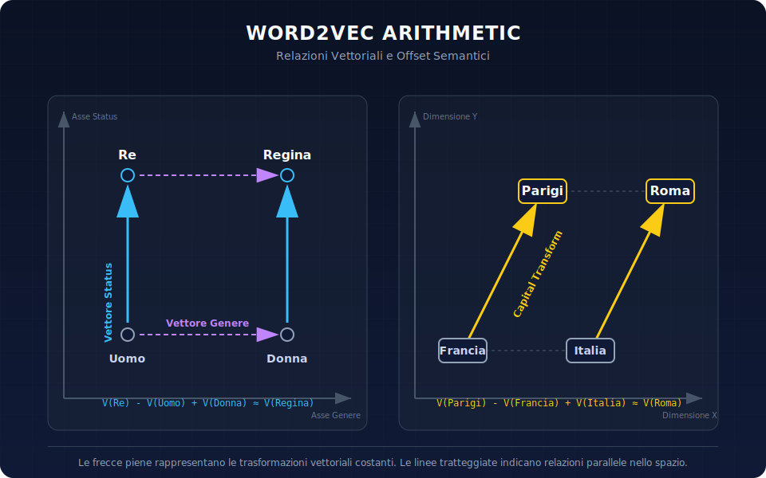
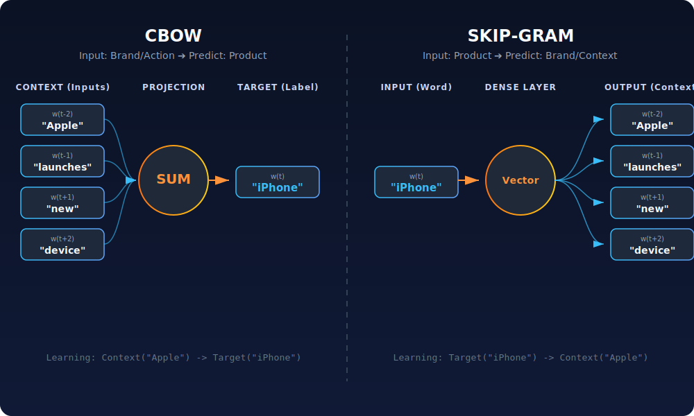

From Classic NLP Models to LLMs (Part 1)
Welcome to the third installment of our journey toward becoming a GeoAI engineer. In this article, we’re going to talk about history, focusing on how we arrived at GPT, Gemini, and the like, and where it all began. But don't worry, that's not all we'll cover!
Enjoy the read!
Introduction
Over the last few decades, Natural Language Processing (NLP) has undergone an extraordinary evolution, moving from "simple" statistical methods to modern Large Language Models (LLMs) with billions of parameters.
This revolution hasn't just been historical; it has been primarily architectural. New ideas (most notably the Transformer) have overcome limitations once considered insurmountable. In these two articles, we will trace the key milestones of this evolution, from classic NLP models to today's LLMs, analyzing the design choices, limitations, and trade-offs of each phase.
Specifically, in this article, we look back at the evolution of NLP before the Transformer breakthrough: from statistical methods (Bag-of-Words, TF-IDF, n-grams) and distributional embeddings to recurrent models like RNNs, LSTMs, and GRUs.
The goal is to understand not just what changed, but why pre-Transformer methods began to show structural limitations regarding long context, scalability, and parallelization. These limitations set the stage for the next leap forward, which we will cover in the next article.
NLP Before Deep Learning
Before the deep learning era, NLP was dominated by statistical methods and hand-crafted features.
If you’ve ever dipped your toes into the world of Natural Language Processing (NLP), you’ve likely encountered technical definitions that might seem incomprehensible at first.
Let’s start with Bag-of-Words (literally a "bag of words"), one of the oldest methods for teaching a computer how to read.
The "Blender" (Bag-of-Words) and the Filter (TF-IDF)
Imagine you want to explain the difference between two sentences to a computer. The computer doesn't know what grammar is, nor does it recognize subjects or verbs. How do we do it?
The Bag-of-Words (BoW) method does something simple yet surprisingly effective:
- It takes your sentence.
- It cuts out every single word with scissors.
- It throws everything into a bag and shakes it up.
What remains is a list of ingredients with no specific order.
Example:
Original sentence: "The cat chases the mouse"
Bag-of-Words: { "cat": 1, "chases": 1, "the": 2, "mouse": 1 }
The computer looks into the bag and says: "Okay, this text is about cats and mice." Pretty simple, right?
The catch with this simplicity is that order doesn't matter, meaning the structure is completely lost.
If we were to put the inverse sentence into the bag:
"The mouse chases the cat"
For the Bag-of-Words model, the contents of the bag are 100% identical. To the model, these two sentences mean the exact same thing, even though the reality is quite different!
This method wastes a lot of resources because it often deals with very sparse vectors. To get an idea, imagine an Excel file with a column for every word in the English dictionary (roughly 170,000+ columns), and your sentences as rows. If your sentence is:
"Hello Matteo"
You would put a 1 in the "Hello" column and a 1 in the "Matteo" column. The other 169,998+ columns would contain a 0.
This is why it’s often considered a very wasteful method: it requires a massive amount of memory to store minimal information.
Before moving on, I want to explain a phrase I often hear: words like "blue" and "azure" are orthogonal vectors in a Bag-of-Words context.
What does that mean? It means the Bag-of-Words model has no semantic intuition.
The word "Happy" is in column A. The word "Glad" is in column B. For us humans, A and B are practically the same. But according to this algorithm, A and B are as distant and different as "Happy" and "Dishwasher." They are just different cells in the Excel sheet. If you search for a document about "happy" people, the computer might ignore a document about "glad" people because it doesn't know they are synonyms.
Finally, there’s that acronym that might look strange: TF-IDF. This is simply a mathematical correction to give the right weight to the words in our bag. Without TF-IDF, the most important words in an English book would be "THE" or "OF," because they appear everywhere. But these words tell us nothing about the book's topic!
TF-IDF is essentially a smart highlighter:
- It turns down the volume on words that appear everywhere (like articles: the, a, an, of, to).
- It turns up the volume on rare and specific words (like "Starship," "Microscope," "Renaissance").
If the word "Bank" appears in only one out of a thousand documents, TF-IDF assigns it a very high score, identifying it as a key term for understanding that specific text.

Figure 01: Word cloud containing all the words in the document we are writing.
N-gram models
N-gram models were proposed in 1948 by Claude Shannon as part of foundational probability theory. They introduce a basic level of context by considering sequences of N words. For example, a trigram estimates the probability of a word based on the two preceding ones ($N=3$). They work well for short or very frequent phrases (e.g., "thank you very" → "much"), but they have significant limitations: they only generate non-zero probabilities for phrases seen during training or those very similar to them, they suffer from sparseness (rare combinations are not covered), and they use a rigid, fixed-length context. In practice, "I want to eat a slice of ___" can hardly guess "cake" if it has never seen that exact sequence. Furthermore, they treat words as atomic symbols, with no concept that "cat" and "feline" are related.
Probabilistic and linear models
Naive Bayes
The simplest method for text classification using probabilistic methods is Naive Bayes, which assumes that words in a document are independent given the topic. This model makes a very strong assumption: that words have no connection to each other within the sentence.
Consider a filter that needs to classify the following sentence:
"You have won a million euros"
The model calculates the probability that the message is spam based on individual words in isolation: the word "Won" has a high historical frequency in spam emails; the word "Million" is statistically rare in ordinary communications but frequent in spam; the word "Euros" further contributes to the probabilistic calculation. By combining these individual probabilities, the model classifies the message as SPAM.
This independence assumption is often incorrect in real-world linguistics. If the sentence were "You haven't won, too bad because there were a million prizes, many in euros," the model would detect the same keywords ("won", "million", "euros") and might misclassify it, ignoring the initial negation or the syntactic structure that changes the meaning.
Despite this approximation, Naive Bayes is extremely efficient and performs well in classification tasks where the presence of specific terms is decisive (e.g., text categorization).
Markov models
Unlike Naive Bayes, Hidden Markov Models (HMMs) take the sequential structure of text into account, albeit with a limited horizon for performing sequential tasks. One example is Part-of-Speech tagging, where the goal is to determine whether a word is a noun, verb, or adjective based on its context.
HMMs model dependencies as state transitions but are limited by very short memory (typically state bigrams) and require manual definition of features and observations. Generally, these approaches required manual feature engineering (e.g., counts, lists of relevant words) and struggled to capture deep semantic relationships or long-range dependencies.
Unlike modern neural networks that autonomously learn representations from data, linear models require an expert to define which characteristics to observe beforehand:
- Defining lists of relevant words (lexicons).
- Creating morphological rules (e.g., "words ending in -ing are verbs").
- Manually managing exceptions.
This handcrafted approach made it difficult to scale models and capture complex semantic relationships or nuances of meaning that were not explicitly encoded by humans.
Main problems and attempted solutions (pre-Transformer):
| Problem | Historical solution | Intrinsic limitation |
|---|---|---|
| No semantic understanding - Words treated as unique IDs (one-hot); no similarity between related terms. | Bag-of-Words, TF-IDF, count-based linear models. | Sparsity & lack of meaning: massive, sparse vectors; no concept of synonyms or polysemy (to the model, "dog" and "puppy" share nothing in common)[1]. |
| Limited local context - Word order matters, but unigram models ignore sequence. | N-grams (bigrams, trigrams, etc.) that consider windows of $N-1$ preceding words. | Rigid window and data sparsity: they only capture short-range dependencies; rare word combinations never seen before cannot be predicted[3]. Memory is limited to $N-1$ words, with no long-term dependencies. |
| Hand-crafted features and simplistic assumptions - Simple generative models (NB, HMM) or "shallow" neural networks. | HMMs for sequences; linear models with features (e.g., word presence, counts). | Limited scalability and generalization: requires defining the right features upfront. Strong assumptions (Markov, independence) lead to loss of contextual information and uncaptured correlations. |
These solutions worked in narrow contexts but had structural flaws. They could neither represent word meaning nor maintain long sentences in memory. Consequently, researchers moved toward methods capable of capturing distributed semantics and longer dependencies. This led to the birth of neural embeddings and recurrent neural network models.
Classic embeddings: word2vec, GloVe, and fastText
To move beyond pure symbolic word representation, word embeddings emerged in the 2010s—dense representations where each word is a continuous vector in a low-dimensional space.
What does low-dimensional mean? It means each word is no longer a massive vector as long as the entire vocabulary, but a compact vector (e.g., 50–300 numbers) that summarizes its relationships with other words.
The core idea is distributional: "You shall know a word by the company it keeps" (Firth, 1957). Models like word2vec (Mikolov et al., 2013) introduced unsupervised training techniques on large datasets to produce word vectors that capture semantic similarities. For example, word2vec produces vectors such that:
- "king" - "man" + "woman" ≈ "queen"
- "Paris" - "France" + "Italy" ≈ "Rome"
This indicates that the model has learned analogical relationships and semantic clusters: similar words (king, queen) have nearby vectors, and the vector difference between king and queen is similar to that between man and woman.

Figure 02: Example of an analogical relationship in the embedding space.
What is an embedding?
Let's take a step back and provide more rigorous definitions. Below is a brief version followed by a more in-depth explanation, depending on the level of detail you need.
In general mathematical terms, an embedding is a function $f: X \to Y$ that maps a space $X$ into another space $Y$ while preserving the essential structure of $X$.
For $f$ to be an embedding, it must satisfy two fundamental conditions:
Injectivity: $f$ must be a "one-to-one" function ($f(a) = f(b) \implies a = b$), ensuring that distinct elements in $X$ remain distinct in $Y$.
Structure preservation: Relationships between points in $X$ (such as distance or topological proximity) must be maintained in their image in $Y$.
In the context of machine learning (the definition that concerns us here), an embedding is a mapping $\phi: S \to \mathbb{R}^d$ that transforms a discrete set $S$ (such as words or graph nodes) into a continuous vector space of dimension $d$ (where usually $d \ll |S|$), such that geometric proximity in the target space reflects semantic similarity in the source space.
Deep dive
If we were to write the mathematical biography of an embedding, we would start by describing it as a bridge between different worlds. It is the tool that allows us to translate abstract or discrete objects into a language that linear algebra—and by extension, neural networks—can understand.
Let's analyze the concept on two levels: the pure topological definition and its instantiation in the world of Artificial Intelligence.
Formally, let $(X, \mathcal{T}_X)$ and $(Y, \mathcal{T}_Y)$ be two topological spaces. A map $f: X \to Y$ is called a topological embedding if:
- $f$ is injective (it does not collapse distinct points into the same point).
- $f$ is continuous. The inverse of the function restricted to its image, $f^{-1}: f(X) \to X$, is also continuous.
In short, $f$ is a homeomorphism between $X$ and its image $f(X) \subset Y$. This means $X$ can be treated as if it were a subspace of $Y$. The structure "lives" inside $Y$ without distortions or tears.
Now, let's move on to the application involving vector embeddings and metric spaces.
In Deep Learning, we slightly relax the requirement for a perfect homeomorphism in favor of a metric property.
Consider a discrete vocabulary $V$ (a set of words). An embedding is a parametric function: $$\theta: V \to \mathbb{R}^d$$
The mathematical goal is not just to map, but to isometricize (or nearly so) an abstract notion of similarity.
By "isometricize," I mean forcing the vector space so that geometric distances (e.g., how close two vectors are) correspond exactly to semantic "distance" (how similar two concepts are). In short, forcing an isometry. I love inventing neologisms :)
If we define an ideal semantic similarity function $Sim(w_i, w_j)$ between two words, the embedding attempts to satisfy the condition:
$$Sim(w_i, w_j) \approx \langle \theta(w_i), \theta(w_j) \rangle$$
Where $\langle \cdot, \cdot \rangle$ represents the dot product (or a metric based on Euclidean distance).
Why does it work? The mathematical justification lies in the manifold hypothesis. This hypothesis assumes that real-world data (such as images or text), despite living in a very high-dimensional space (pixel space or one-hot word encoding), actually concentrate on a much lower-dimensional topological manifold embedded within that space.
The embedding operation, therefore, is an attempt to discover the intrinsic coordinates of this manifold, "unrolling" the complexity of the data onto a dense and continuous vector space $\mathbb{R}^d$, where algebraic operations (addition, subtraction, averaging) acquire semantic meaning.
How do these approaches work?
We've seen plenty of theory; now let's move on to practice.
Word2vec offers two main approaches: CBOW (Continuous Bag-of-Words) predicts a word given its surrounding context, while Skip-gram does the opposite (predicting the context given a target word). In both cases, the neural network trains internal representations (embeddings) so that words appearing in similar contexts have similar vectors. I’ve created an image below that attempts to explain these two visually.

Figure 03: Comparison between CBOW and Skip-gram.
Another popular model, GloVe (Pennington et al., 2014), starts from global word-word co-occurrence statistics and factorizes a matrix to obtain dense vectors. Variants like fastText (Bojanowski et al., 2016) introduced the use of sub-words, building character/n-gram embeddings useful for capturing morphological similarities and handling rare or out-of-vocabulary words.
GloVe (Global Vectors for Word Representation)
Launched in 2014 by Stanford, GloVe was created to solve an inherent problem with previous models. Count-based methods (like LSA and others) captured global statistics well but struggled with analogies. Word2Vec, which we just looked at, captured local analogies well but ignored the global statistics of the corpus.
GloVe combines the best of both worlds.
The underlying concept, which I consider fundamental, is the co-occurrence matrix.
Unlike Word2Vec, which learns by looking at a local context window one at a time, GloVe trains on a global co-occurrence matrix $X$.
The element $X_{ij}$ represents how many times word $j$ appears in the context of word $i$.
The authors' brilliant intuition is that meaning does not reside in simple probabilities $P(k|i)$, but in the ratio of probabilities.
Let's use an example, because even I'm starting to lose track re-reading these abstract definitions. Imagine we want to distinguish between ice and steam:
- A word like solid will be highly correlated with ice but not with steam.
- A word like gas will be correlated with steam but not with ice.
- A word like water will be correlated with both.
- A word like fashion won't be correlated with either.
Mathematically, GloVe aims to satisfy this linear relationship:
$$w_i^T w_j + b_i + b_j = \log(X_{ij})$$
Where $w$ represents the vectors and $b$ the biases. Essentially, the dot product of two vectors must equal the logarithm of their co-occurrence. This forces the vectors to capture the global statistical structure of the language. I encourage you to read the official paper for a full overview of how it works.
FastText: The Importance of Morphology
Introduced by Facebook AI Research (FAIR) in 2016, FastText addresses the biggest limitation of Word2Vec and GloVe: treating words as indivisible atomic units.
For GloVe, "eat," "eaten," and "eating" are three distinct entities. If the model encounters a word it has never seen before, like "eatable," it fails (the OOV - Out Of Vocabulary problem).
Let's look at the mechanism it uses: character n-grams.
FastText represents each word as a "bag" of character n-grams. Take the word apple with $n=3$. FastText breaks it down like this:
- It adds special delimiters:
< apple > - It generates the n-grams (remember that the special character counts as a character):
<ap, app, ppl, ple, le> - It includes the whole word:
< apple >
The final word vector is the sum (or average) of these n-gram vectors.
In English, morphology is relatively simple. In Italian, a verb root can have dozens of inflections. FastText understands that "velocemente" (quickly) and "lentamente" (slowly) share an adverbial suffix, or that "gatto" (cat) and "gatti" (cats) share the same root.
Furthermore, if it encounters an unknown word (e.g., a neologism or a typo), it can still construct a vector by summing the known n-grams that compose it.
| Feature | GloVe | FastText |
|---|---|---|
| Base unit | Whole word | Character n-grams |
| Training | Global Co-occurrence Matrix | Local prediction (skip-gram with subwords) |
| Unknown Words (OOV) | Impossible (random or zero vector) | Possible (built from n-grams) |
| Model Size | Compact | Large (must save vectors for all n-grams) |
| Ideal use case | Standard semantic analysis, English corpora | Morphologically rich languages (IT, DE, ES), noisy text |
Table 01: Comparison between GloVe and FastText
In conclusion, if you're working with a clean English dataset, GloVe offers excellent performance with low computational costs. However, for modern applications—especially social media or Romance languages—FastText is almost always superior thanks to its morphological resilience.
What static embeddings do and don't solve
Static embeddings essentially solve two problems:
- Reduced sparsity: They move from massive, sparse vectors (one-hot encoding on vocabularies of tens of thousands of words) to dense vectors, typically with 50-300 dimensions. This alleviates memory issues and allows for generalization: if "cat" and "feline" have nearby vectors, the model can transfer knowledge from one to the other even if one was rare in the corpus.
- Semantic similarity: For the first time, the machine has a notion of meaning. Related words (based on context of use) are located near each other in the vector space; clusters of similar words emerge automatically (e.g., {Monday, Tuesday, ...} grouped together, {Rome, Milan, ...} grouped together).
Now let's look at what they don't solve. The crucial problem with classic embeddings is that they are static. Every word in the dictionary corresponds to a single fixed vector, regardless of the context in which it appears. This is limiting because many words are polysemous: the meaning of "bank" depends on the context (a financial institution vs. the side of a river). A static embedding for "bank" ends up being a sort of average of the two meanings, unable to represent either precisely. For example, "Java" can refer to a programming language or an island; a single vector cannot distinctly reflect both possibilities.
To clarify, consider these sentences with the word "porto":
- "Il porto di Genova è uno dei più grandi del Mediterraneo." (The port of Genoa is one of the largest in the Mediterranean - a maritime hub)
- "Dopo cena prendo un bicchiere di Porto." (After dinner, I'll have a glass of Port - a fortified wine)
A static embedding model assigns the exact same vector to the word "porto" in both sentences, failing to distinguish between the noun for a location (harbor) and the specific name of a wine (Port). This semantic ambiguity remains unresolved. In practice, a model using static embeddings "thinks" that "porto (harbor)" and "porto (wine)" are the same concept, losing vital information.
The following table compares static and contextual embeddings:
| Static Embeddings (word2vec, GloVe) | Contextual Embeddings (ELMo, BERT, GPT) |
|---|---|
| A fixed vector for each word-type in the vocabulary, independent of context. | A dynamic vector for each occurrence of a word, calculated based on surrounding words. |
| Capture global similarities between words (e.g., "bank" near "finance" and "money"). | Capture the specific sense within a sentence (e.g., "bank" in "data bank" will have an embedding close to "computer science", while in "bank manager" it will be close to "financial institution"). |
| Pre-trained once on a generic corpus; used directly or as initialization in NLP models. | Derived from deep models (RNNs/Transformers, discussed later) pre-trained on large corpora with linguistic objectives (e.g., language modeling). They require inference but provide a richer understanding. |
| Limitation: They do not handle polysemy or long-range syntactic dependencies. Context beyond the local window is ignored. | Advantage: They incorporate arbitrarily long context: the entire utterance (or paragraph) influences each word's vector, reflecting syntactic structure and distant information. |
Table 02: Comparison of static and contextual embeddings
In summary, word2vec, GloVe, and their counterparts marked a turning point by introducing distributed semantics and mitigating the sparsity problem. However, they left the issue of context unresolved: how do we represent entire sentences, or words that change meaning based on their surroundings? The first answer to this came with recurrent models, specifically designed to model sequences.
RNN, LSTM, GRU: How to model context
RNN: Recurrent networks and the matter of memory
While embeddings produced static word representations, Recurrent Neural Networks (RNNs) aimed to model entire text sequences as dynamic inputs.
Imagine reading a sentence. You don't start from scratch with every word; you maintain a mental "train of thought" that updates as you progress. RNNs attempt to replicate this exact biological mechanism.
Unlike traditional feed-forward networks that process inputs in batches, an RNN is inherently sequential. It processes one element (a token) at a time, carrying forward information from previous steps.
You might be wondering: the principle sounds good, but how does this "recycling" of information actually work?
The secret lies in the hidden state vector, often denoted as $h$. This vector acts as the network's "short-term memory."
At each time step $t$ (when the network reads the $t$-th word), two things happen simultaneously:
Current Input: The network looks at the new input token $x_t$.
Past Memory: The network retrieves the hidden state calculated at the previous step, $h_{t-1}$.
These two ingredients are fused together to update the memory.
Mathematical deep dive
As before, let's look at the underlying mathematics. You aren't required to read this, but it provides a complete picture of how these neural networks function.
Formally, the core of an RNN is the hidden state vector ($h$), which serves as the network's "short-term memory." At each time step $t$ (when the network processes the $t$-th word), two things occur simultaneously:
Current Input: The network processes the new input token $x_t$.
Past Memory: The network retrieves the hidden state calculated at the previous step, $h_{t-1}$.
These two components are merged to update the memory. Formally, the heart of an RNN is a single equation repeated cyclically:
$$h_t = \sigma_a(W \cdot [h_{t-1}, x_t] + b)$$
Let's break it down:
$[h_{t-1}, x_t]$: This is the concatenation operation. We physically place the past memory vector and the current word vector side-by-side.
$W$ (Weight matrix): This is the "brain" of the network. It contains the parameters the network has learned during training and is shared at every step. The network uses the same matrix to process both the first and last words, which allows it to handle variable-length sentences.
$\sigma_a$: This is the activation function. In classic RNNs (or Elman Networks), the standard choice is the Hyperbolic Tangent ($\tanh$). Since the output is reused cyclically, an unbounded function (like standard ReLU or linear) would risk causing exploding activations after a few iterations if the weights are not perfectly balanced. The $\tanh$ acts as a safety valve for numerical stability. For more information, I am linking the book I used to study this.
Why the $\tanh$ function specifically? It serves to keep values bounded (between -1 and 1), preventing the resulting values from exploding (exploding activations) during the forward pass. Note, however, that $\tanh$ does not solve the vanishing gradient problem during training; in fact, its derivatives are always $< 1$, which contributes to making learning difficult on very long sequences.
Note: It is possible to use ReLU to mitigate the vanishing gradient, but it requires very specific weight initialization (such as identity) to avoid instability, as demonstrated by research.
If you want to learn more about exploding or vanishing gradients, contact me!
In summary: at time $t$, the new memory $h_t$ is a transformed version of the old memory plus the new information.
In simple terms, an RNN reads text just like we do—word by word—updating a sort of "internal memory" that accumulates the information read so far. This allows it to account for long-range dependencies, as a word's influence can propagate through the hidden state across the entire sequence. For example, in the sentence:
"The book that the professor assigned was…"
When predicting the final adjective, an RNN could remember the distant subject "the book" instead of getting confused by "the professor." This "memory" capability was the major advantage over n-gram models.
The gradient problem
However, in practice, RNNs have shown serious difficulty in capturing long-term dependencies, particularly in very long sequences. The main issue is known as the vanishing gradient (which we mentioned earlier): during training, gradients propagated backward through many time steps decay exponentially until they almost vanish (a characteristic that is not exclusive to RNNs).
Let's start with the vanishing gradient.
To understand why, we need to look at Backpropagation Through Time (BPTT). When we calculate the error at time $T$ and try to update the weights based on an input that occurred much earlier (at time $k$), we must apply the chain rule.
The partial gradient of the state $h_T$ with respect to a previous state $h_k$ is the product of the partial derivatives of all intermediate steps:
$$\frac{\partial h_T}{\partial h_k} = \prod_{i=k+1}^{T} \frac{\partial h_i}{\partial h_{i-1}} = \prod_{i=k+1}^{T} W^T \cdot \text{diag}(f'(z_i))$$
Where $f'$ is the derivative of the activation function (e.g., $\tanh$). This is exactly where the problem lies:
The derivative of $\tanh$ is always $< 1$.
If the weights in $W$ are initialized as small numbers (as is standard practice), their norm will also often be $< 1$.
The result is a repeated multiplication of terms less than 1. Just as $0.9^{50} \approx 0.005$, the gradient quickly tends toward zero as the distance ($T - k$) increases.
What is the result? The network forgets the beginning of the sequence while training on the end. Essentially, basic RNNs have a "short memory" and struggle to learn complex syntactic dependencies or global contexts.
In parallel, there is the opposite case: exploding gradients. If weights or derivatives are $>1$, the norm grows exponentially and leads to massive values, causing parameters to become NaN (Not a Number).
Fortunately, this is easier to manage (often resolved with gradient clipping) and identify immediately because training visibly diverges. Essentially, if the gradient norm exceeds a certain threshold, it is manually "clipped."
Vanishing gradients, on the other hand, are insidious: training appears to progress, but the network isn't actually learning long-term dependencies because updates from the distant past are effectively zero.
 Figure 04: RNN architecture
Figure 04: RNN architecture
LSTM: Long Short-Term Memory
To mitigate the vanishing gradient problem, Hochreiter & Schmidhuber (1997) introduced Long Short-Term Memory (LSTM), an RNN variant with a more complex internal architecture.
The core idea behind LSTMs is to separate actual memory from computational operations. Think of the cell state ($C_t$) as a conveyor belt running straight through the entire temporal chain.
In a classic RNN, the state is continuously transformed (multiplied by $W$ and passed through an activation function), which corrupts the original information after just a few steps. In an LSTM, information can flow along the cell state virtually unchanged (I'll explain this in more detail in a moment). The network must make an active effort to modify it—either by adding or removing data.
This linear flow allows gradients to backpropagate without vanishing, even over 1,000 time steps.
An LSTM cell controls the flow of information through three gates. Each gate is a neural network with a sigmoid ($\sigma$) activation, producing values between 0 (closed, nothing passes) and 1 (open, everything passes).
The LSTM architecture thus introduces gating: each cell contains input, output, and—most importantly—a forget gate, which regulates how much old information to keep and how much to overwrite. In practice, the LSTM maintains a cell state $c_t$ that can propagate (almost) unchanged if the model deems it appropriate, overcoming repeated multiplications by values near zero. Gradients can flow through $c_t$ more easily, preventing them from zeroing out.
Consequently, the LSTM architecture can "remember" information over multiple steps, deciding autonomously when to forget. Let's look at the anatomy of the cell state in the following subsections.
A. Forget gate
This part answers the question:
"What should I discard from the old memory?"
It looks at the current input $x_t$ and the previous state $h_{t-1}$, deciding for each number in the cell state $C_{t-1}$ whether to keep it or zero it out.
For example, if the input is "He," the network might decide to forget the "feminine" gender it had stored from a previous subject.
B. Input gate
This part answers the question:
"What new information should I store?"
This happens in two steps:
A sigmoid decides which values to update.
A $\tanh$ function creates a vector of new candidate values.
These two are multiplied and added to the cell state.
C. Output gate
Finally, this part answers the question:
"What should I output to the world (and the next step) now?"
Keep in mind that not everything in memory is needed immediately.
The memory $C_t$ is filtered: the network might remember that the subject is singular, but since it now needs to predict a verb, it only passes the "singular" information to the output ($h_t$) to conjugate the verb correctly.
GRU: A variant of LSTM
A simpler alternative introduced later is the GRU (Gated Recurrent Unit), which combines certain gates and simplifies the unit; it performs well in many cases with fewer parameters. These models were explicitly designed to learn long-term dependencies in sequences.
In 2014, Cho et al. introduced a simplified version of the LSTM: the GRU architecture.
There are essentially two main differences:
Gate fusion: GRU merges the Forget Gate and Input Gate into a single Update Gate. If the gate is 1, it keeps the old memory; if it is 0, it overwrites it with the new one.
Single state: It no longer separates the Cell State ($C$) and Hidden State ($h$). There is only one state vector.
The main advantage is that there are fewer trainable parameters, making it computationally faster. In terms of performance, GRUs match LSTMs in many empirical tasks. LSTMs tend to perform slightly better on very large datasets and very long sequences due to their higher expressive capacity (as they have more parameters).
| Feature | Standard RNN | LSTM | GRU |
|---|---|---|---|
| Memory | Unstable (Vanishing Gradient) | Stable (Separate Cell State) | Stable (Gating mechanism) |
| Complexity | Low (1 operation per step) | High (4 internal neural networks) | Medium (2 internal neural networks) |
| Gates | None | 3 (Forget, Input, Output) | 2 (Reset, Update) |
| Current Usage | Rarely (baseline only) | Time series, Legacy NLP | Efficient systems, Mobile |
Table 03: Comparison between RNN, LSTM, and GRU
Despite the significant improvements brought by LSTM/GRU, several structural limitations of recurrent approaches remain:
- Long-range dependencies remain problematic: In theory, an LSTM can maintain information for hundreds of steps, but in practice, its effectiveness diminishes beyond a certain length (e.g., 100 tokens). Furthermore, the context is entirely compressed into a fixed-size hidden vector (e.g., 256 or 512 dimensions): there is a physical limit to how much information this vector can carry. If the text is very long (like a full document), even an LSTM struggles to remember details from the beginning by the time it reaches the end.
- Backpropagation Through Time (BPTT) is expensive and fragile: Training an RNN requires unrolling the network over time and backpropagating through every step, as noted in the paper "Attention is all you need". This means that if we have sequences of 50 words, the effective network we calculate gradients on has 50 layers (all sharing weights, but computationally equivalent to a 50-layer deep network). This calculation is heavy and sequential: you cannot parallelize the 50 steps because step t depends on the state of t-1. This is a major bottleneck: even with GPUs, the RNN must process data serially, unlike feed-forward models that process all elements simultaneously. This makes training slow on long sequences. Additionally, the longer the unroll, the more unstable the gradients become (vanishing/exploding). Often, truncated BPTT was used: backpropagation is cut off after, for example, 20 steps, intentionally breaking long-range dependencies to improve stability and speed. However, by doing this, the network doesn't truly learn beyond that "artificial" window.
- They do not scale well in terms of data and model size: To leverage large datasets or high-capacity models, one would need better parallelization and batching, which is not trivial with RNNs.
In summary, RNNs/LSTMs introduced the idea of differentiable temporal memory and enabled significant progress (e.g., Google Neural Machine Translation 2016 used bidirectional LSTMs + attention, which we will revisit shortly). However, their recurrent nature imposed limits on speed and the ability to model long contexts. It was clear that a different architecture was needed to make the next leap—one better suited for parallel computing and capable of looking at the entire context more directly. The Transformer architecture was born from these needs.
🎮 Interactive simulation. Before moving on to the Transformer, you can visually compare the behavior of RNN, LSTM, and GRU in the dedicated simulation.
Figure 05: Interactive comparative simulation between RNN, LSTM, and GRU architectures.
Conclusion (of part 1)
We have seen how the NLP world transitioned from sparse, local representations to neural models capable of handling sequences and temporal memory. RNNs, LSTMs, and GRUs marked a fundamental advancement but also highlighted significant limitations: sequential training, difficulty with very long-range dependencies, and poor scalability on large volumes of data.
In the next article, we will see how Transformers overcame these bottlenecks with self-attention, paving the way for foundation models and modern LLMs.
Sources (links cited in part 1)
Below are only the sources whose links are present in the current text:
- Akanksha Sinha - From N-grams to Transformers
- J. R. Firth (1957) - Papers in Linguistics 1934-1951
- Mikolov et al. (2013) - Efficient Estimation of Word Representations in Vector Space
- Shojaei - Beyond "One-Word, One-Meaning": Contextual Embeddings
- Pennington et al. (2014) - GloVe: Global Vectors for Word Representation
- Bojanowski et al. (2016) - fastText
- FAIR - fastText (PDF)
- Voice Tech Podcast - Topic Modeling with LSA, PLSA, LDA and Word Embedding
- Goodfellow, Bengio, Courville (2016) - Deep Learning
- Akbari - Understanding Vanishing and Exploding Gradients
- Britz - RNN Tutorial Part 3
- Dive into Deep Learning - Backpropagation Through Time
- Hochreiter & Schmidhuber (1997) - Long Short-Term Memory
- Cho et al. (2014) - Learning Phrase Representations using RNN Encoder-Decoder
- Vaswani et al. (2017) - Attention Is All You Need
- Video on gradient clipping